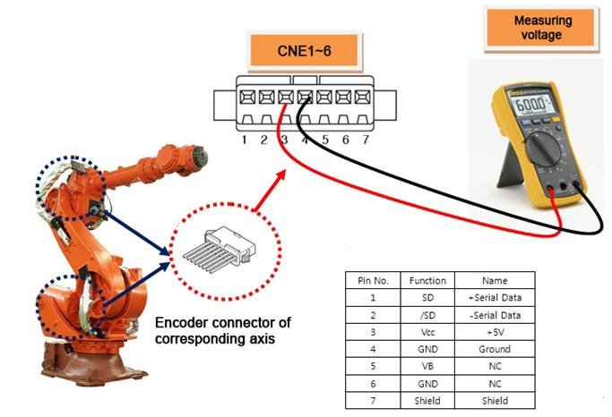
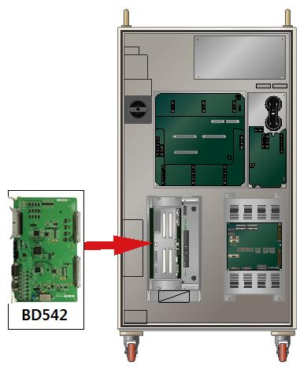
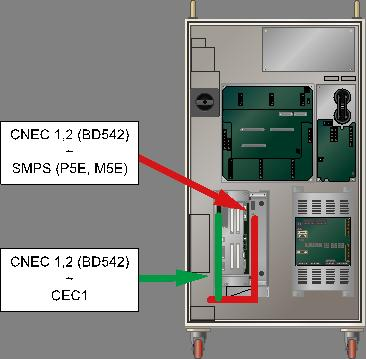

1.1.23.1. Outline
Servo Board receives data from the encoder periodically through a serial communication in order to perform a Servo control on the motor. This error occurs if the received data from the encoder violates the communication protocol.
This error may occur due to a fault of components that received the data from the encoder, or the problems in an encoder shield lines or the wiring.
1.1.23.2. Causes and examine methods
|
(1) Please check the supply voltage to the Encoder.
(2) Please replace the Servo Board and test it.
(3) Please replace the Motor and test it.
(4) Please examine the wiring.
(5) Please examine the communication status of wiring after the repair. |
(1) Please check the supply voltage to the Encoder.
Power supply voltage to the encoder must be in a range of 5V±5% (4.75V ~ 5.25V) - (encoder side connector's supply voltage). If the voltage is reduced below 4.75V, encoder may not operate normally and it will cause this error.
Please measure the voltage of encoder side's connector-pin (3-4).

Figure 1.107 Measuring the encoder voltage
If the measured voltage is lower than the reference voltage, it is required to turn '+5V ADJ(E) voltage adjustment terminal of the encoder power supply to ensure that the connector voltage at the encoder side can be adjusted within the reference voltage.
Figure 1.108 Adjusting the encoder voltage
(2) Please replace the Servo Board and test it.
After the replacement of the Servo Board, if the error does not persist, the Servo Board is faulty. Please replace the Servo Board with new one.

Figure 1.109 Replacing the servo board
(3) Please replace the Servo Motor and test it.
If the error does not persist after the replacement of Servo Motor, Servo Motor is faulty. Please replace the Servo Motor with new one. Below diagram describes the locations of each axis's motor (HS165 Robot). For other Robot, please refer to the Robot's maintenance manual to replace it.

Figure 1.110 Locations of Each Axis's Motor (HS165 Robot).
(4) Please examine the wiring.
Encoder's wiring examination orders are as below.
Firstly, examine the loose contact of the connectors that are related to the Encoder's wiring.
Secondly, examine the short-circuit of encoder's wiring. Please use equipment such as the multi meter (tester) and examine each phase's wiring one by one.
Thirdly, replace the encoder's wiring and test it.
If the encoder's wiring has not been disconnected and if the error caused by certain problems (loose contact of shield line, contact between the encoder's signal line and other electric power line, or a contact with the metal part of Robot's main frame) it cannot be detected by short-circuit test. So please replace the wiring and test it.
n Please examine the internal wiring of the Controller
Please examine the wiring between the CNEC1, 2 (BD542) connector and the SMPS(P5E, M5E)
Please examine the wiring between the CNEC1, 2 (BD542) connector and the CEC1.

Figure 1.111 Checking the encoder wiring
n Please examine the wiring between the Controller and the Robot.
Please examine the wiring between the CNEC1 and the CER1.

Figure 1.112 Basic Installation Diagram of the Robot and Control Period

Figure 1.113 Connection between the Robot's manipulator and the Controller
n Please examine the wiring of the mainframe.
Please examine the wring between the CER1 and CNE1~6 (Encoder side's connector).
Please refer to the wiring diagram of Robot's maintenance manual.

Figure 1.114 Robot's Internal Wiring
(5) Please examine the communication status of wiring after the repair.
Once actions for the problem are taken, please refer to 『Count of encoder communication failure display function manual』 to check the communication status.

|
Count of communication failure |
Encoder's status |
Content |
|
0~2 |
Normal |
Normal status |
|
3~5 |
Examine required |
Wiring, encoder or the board need to be examined |
|
6~8 |
Warning |
Dangerous status. Robot may be immobilized |